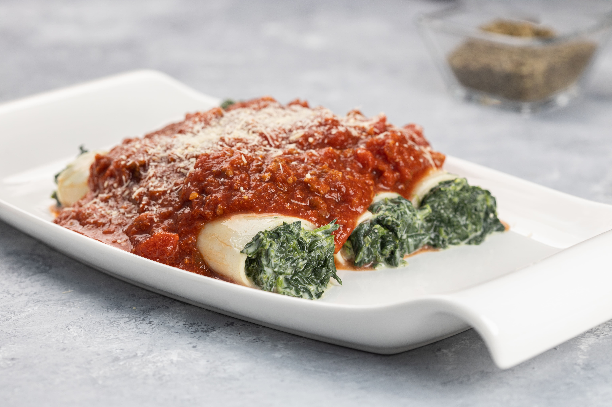

Sorrentinos
Los sorrentinos son un tipo de pasta rellena argentina, parecida a los ravioli pero de mayor tamaño, de forma circular y, en la receta original, sin repulgue.
Fideos
son un tipo de pasta con forma alargada. Los fideos pueden ser cortos, como el şehriye o el cabello de ángel, o bien largos y gruesos como los pici o los soba, igualmente largos pero más finos como los spaghetti, o extremadamente finos como los fideos de cristal.
Ravioli
Ravioli, Raviol o Raviole es el nombre de un tipo de pasta rellena realizada con diferentes ingredientes y generalmente replegada en forma cuadrada. Se acompañan de algún tipo de salsa, en especial de tomate, tucos, pesto o crema
Canelones
Los canelones son una pasta ancha de forma rectangular que se emplea a menudo en la cocina italiana para hacer platos con carne picada, pescado, verdura, requesón o espinacas en su interior. Se suele enrollar formando un cilindro, y a veces aparece la denominación manicotti.
Lasaña
La lasaña es un tipo de pasta. Se suele servir en láminas superpuestas intercaladas con capas de ingredientes al gusto, más frecuentemente carne en salsa boloñesa y bechamel. Su origen es italiano y el plato preparado usualmente con carne suele llamarse lasaña al horno.